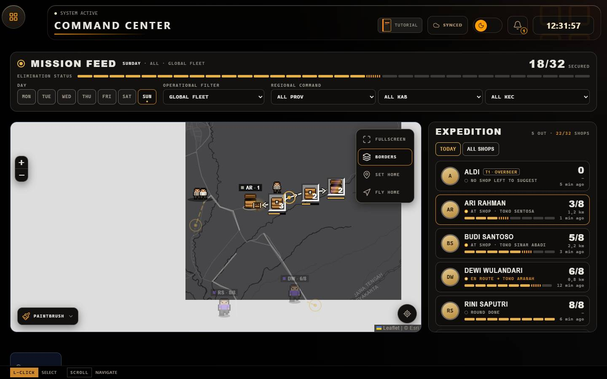
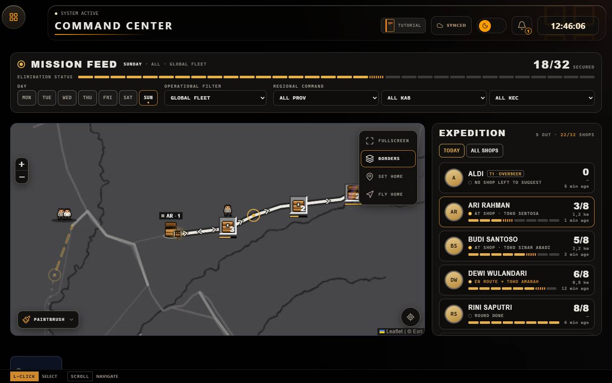

Changing the pressed salesman: the light flash is gone
PC, the moment after pressing Ari while Budi was pressed. The map moves to Ari; until the dark tiles load, the empty map used to show a light grey.

BEFORE · 0.07 s after the press · map brightness 68 → 146 · 54 % of the map jumped

AFTER · same moment · brightness stays 68–70 · under 4 % of the map changes per frame